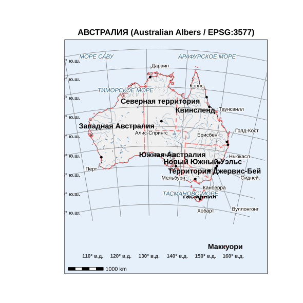

Linking to GEOS 3.13.1, GDAL 3.11.4, PROJ 9.7.0; sf_use_s2() is TRUE
Attaching package: 'dplyr'The following objects are masked from 'package:stats':
filter, lagThe following objects are masked from 'package:base':
intersect, setdiff, setequal, unionlibrary(ggplot2)
library(ggrepel)
library(ggspatial)
options(warn = 1)
root <- "D:/users/platt/shapefile/auxiliary/naturalearth/5.1.2"
countries <- ursa::spatial_read(file.path(root, "10m_cultural", "ne_10m_admin_0_countries.shp"))
rivers_aus <- ursa::spatial_read(file.path(root,"10m_physical", "ne_10m_rivers_australia.shp"))
lakes_aus <- ursa::spatial_read(file.path(root, "10m_physical", "ne_10m_lakes_australia.shp"))
cities <- ursa::spatial_read(file.path(root, "10m_cultural", "ne_10m_populated_places.shp"))
states <- ursa::spatial_read(file.path(root, "10m_cultural", "ne_10m_admin_1_states_provinces.shp"))
crs_aus <- 3577
australia <- countries %>%
filter(NAME == "Australia") %>%
st_transform(crs_aus)
cities_aus <- cities %>%
filter(ADM0NAME == "Australia") %>%
st_transform(crs_aus)
states_aus <- states %>%
filter(admin == "Australia") %>%
st_transform(crs_aus)
rivers_aus <- st_transform(rivers_aus, crs_aus)
lakes_aus <- st_transform(lakes_aus, crs_aus)
city_names_ru <- c(
"Дарвин" = "Darwin",
"Таунсвилл" = "Townsville",
"Алис-Спрингс" = "Alice Springs",
"Брисбен" = "Brisbane",
"Перт" = "Perth",
"Аделаида" = "Adelaide",
"Ньюкасл" = "Newcastle",
"Сидней" = "Sydney",
"Мельбурн" = "Melbourne",
"Канберра" = "Canberra",
"Хобарт" = "Hobart",
"Кэрнс" = "Cairns",
"Голд-Кост" = "Gold Coast",
"Вуллонгонг" = "Wollongong"
)
target_cities <- names(city_names_ru)
major_cities <- cities_aus %>%
filter(NAME %in% city_names_ru) %>%
mutate(name_ru = names(city_names_ru)[match(NAME, city_names_ru)])
sea_labels <- data.frame(
name_ru = c("ТИМОРСКОЕ МОРЕ", "МОРЕ САВУ", "АРАФУРСКОЕ МОРЕ", "ТАСМАНОВО МОРЕ"),
lon = c(122.0, 121.5, 134.0, 158.0),
lat = c(-10.5, -9.0, -9.5, -40.0)
) %>%
st_as_sf(coords = c("lon", "lat"), crs = 4326) %>%
st_transform(crs_aus)
lon_breaks_deg <- seq(110, 160, 10)
lat_breaks_deg <- seq(-45, -5, 5)
create_meridian <- function(lon_value) {
points <- data.frame(
lon = rep(lon_value, 100),
lat = seq(-5, -48, length.out = 100)
) %>%
st_as_sf(coords = c("lon", "lat"), crs = 4326)
line <- points %>%
summarise(geometry = st_combine(geometry)) %>%
st_cast("LINESTRING") %>%
st_transform(crs_aus)
return(line)
}
create_parallel <- function(lat_value) {
points <- data.frame(
lon = seq(105, 165, length.out = 100),
lat = rep(lat_value, 100)
) %>%
st_as_sf(coords = c("lon", "lat"), crs = 4326)
line <- points %>%
summarise(geometry = st_combine(geometry)) %>%
st_cast("LINESTRING") %>%
st_transform(crs_aus)
return(line)
}
meridians_list <- lapply(lon_breaks_deg, create_meridian)
meridians <- do.call(rbind, meridians_list)
parallels_list <- lapply(lat_breaks_deg, create_parallel)
parallels <- do.call(rbind, parallels_list)
bbox_aus <- st_bbox(australia)
x_range <- bbox_aus["xmax"] - bbox_aus["xmin"]
y_range <- bbox_aus["ymax"] - bbox_aus["ymin"]
lon_labels_sf <- st_sfc(lapply(lon_breaks_deg, function(x) st_point(c(x, -48))), crs = 4326)
lon_labels_3577 <- st_coordinates(st_transform(lon_labels_sf, crs_aus))[, "X"]
lat_labels_sf <- st_sfc(lapply(lat_breaks_deg, function(y) st_point(c(105, y))), crs = 4326)
lat_labels_3577 <- st_coordinates(st_transform(lat_labels_sf, crs_aus))[, "Y"]
xlims <- bbox_aus[c("xmin", "xmax")]
ylims <- bbox_aus[c("ymin", "ymax")]
xlims_expanded <- xlims + c(-0.15 * x_range, 0.15 * x_range)
ylims_expanded <- ylims + c(-0.15 * y_range, 0.15 * y_range)
map_final <- ggplot() +
geom_sf(data = australia, fill = "#f0f0f0", color = "#333333", linewidth = 0.4) +
geom_sf(data = lakes_aus, fill = "#b0d0e0", color = "#4B7B9C", linewidth = 0.2) +
geom_sf(data = rivers_aus, color = "#4B7B9C", linewidth = 0.2, alpha = 0.8) +
geom_sf(data = meridians, color = "#666666", linewidth = 0.3) +
geom_sf(data = parallels, color = "#666666", linewidth = 0.3) +
geom_sf(data = states_aus, fill = NA, color = "#FF6B6B", linewidth = 0.6, linetype = "dashed") +
geom_sf(data = major_cities, color = "#000000", size = 2, shape = 16) +
geom_text_repel(data = major_cities,
aes(label = name_ru, geometry = geometry),
stat = "sf_coordinates",
size = 3.5,
box.padding = 1.2,
point.padding = 1.0,
force = 3,
segment.color = "#999999",
min.segment.length = 0.1,
max.overlaps = 50,
bg.color = "white",
bg.r = 0.15) +
geom_text(data = states_aus,
aes(label = name_ru, geometry = geometry),
stat = "sf_coordinates",
size = 5,
fontface = "bold",
color = "#000000",
bg.color = "white",
bg.r = 0.2,
check_overlap = TRUE) +
geom_text_repel(data = sea_labels,
aes(label = name_ru, geometry = geometry),
stat = "sf_coordinates",
size = 4,
fontface = "italic",
color = "#2A5F8A",
box.padding = 2.0,
point.padding = 1.5,
force = 5,
segment.color = NA,
bg.color = "white",
bg.r = 0.15,
min.segment.length = Inf) +
annotate("text",
x = lon_labels_3577,
y = ylims[1] - 0.05 * y_range,
label = paste0(lon_breaks_deg, "° в.д."),
size = 3.5,
color = "#333333",
fontface = "bold") +
annotate("text",
x = rep(xlims[1] - 0.05 * x_range, length(lat_breaks_deg)),
y = lat_labels_3577,
label = paste0(abs(lat_breaks_deg), "° ю.ш."),
size = 3.5,
color = "#333333",
hjust = 1,
fontface = "bold") +
annotation_scale(location = "bl",
width_hint = 0.18,
height = unit(0.2, "cm"),
line_width = 1,
bar_cols = c("black", "white"),
text_col = "black",
text_cex = 0.9) +
coord_sf(xlim = xlims_expanded,
ylim = ylims_expanded,
expand = FALSE,
crs = crs_aus) +
theme_minimal() +
theme(
panel.grid.major = element_blank(),
panel.grid.minor = element_blank(),
panel.background = element_rect(fill = "#e6f0fa", color = "black", linewidth = 0.5),
panel.border = element_rect(color = "black", fill = NA, linewidth = 0.5),
axis.text = element_blank(),
axis.title = element_blank(),
axis.ticks = element_blank(),
plot.title = element_text(hjust = 0.5, size = 16, face = "bold"),
plot.margin = margin(2, 2, 2, 4, "cm")
) +
labs(title = "АВСТРАЛИЯ (Australian Albers / EPSG:3577)")Warning in geom_text(data = states_aus, aes(label = name_ru, geometry = geometry), : Ignoring unknown
parameters: `bg.colour` and `bg.r`Scale on map varies by more than 10%, scale bar may be inaccurate
ggsave("australia2_reproduced_albers_3577_curved.png", map_final, width = 15, height = 12, dpi = 100, bg = "white")Scale on map varies by more than 10%, scale bar may be inaccurateScale on map varies by more than 10%, scale bar may be inaccuratedevSVG
2
✅ Карта сохранена в: C:/platt/education/sevinGIS/students/Сергей Гурьянов/hw2 - australia_albers_3577_curved.png - australia_albers_3577_curved.pdf